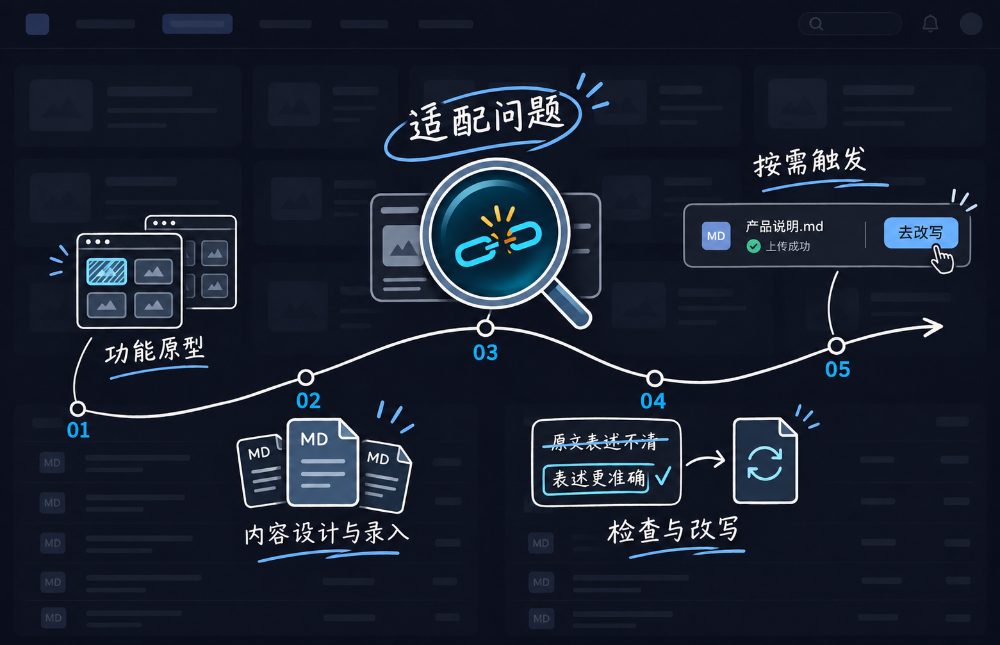
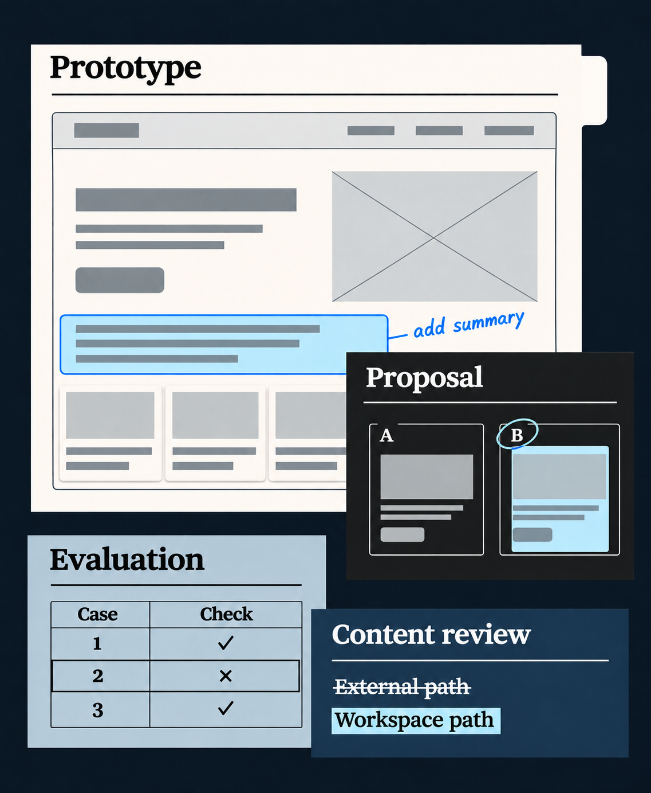
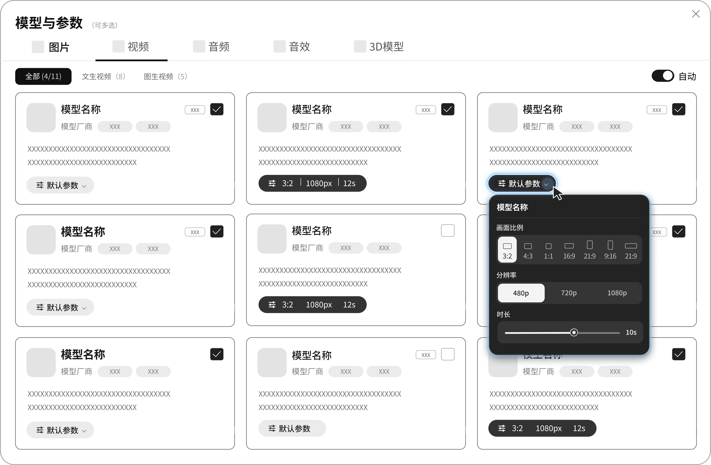
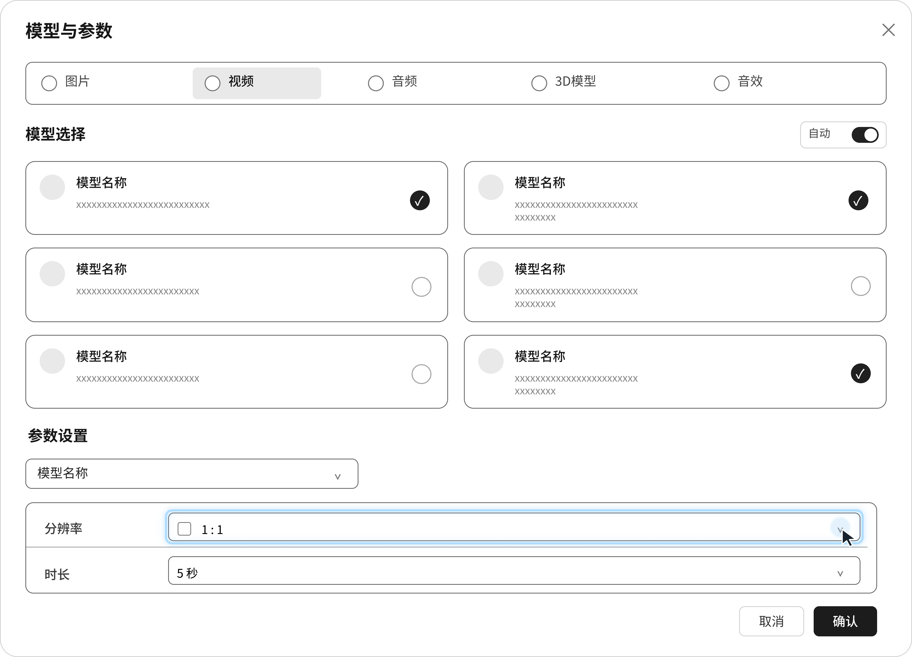
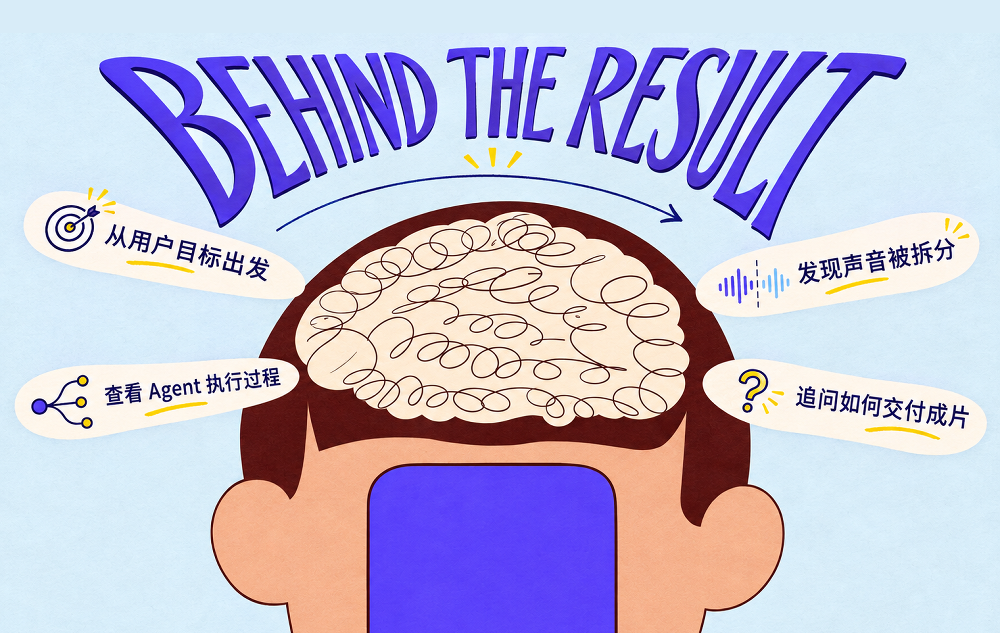

Strategy
产品功能设计与迭代
在多模态创作产品中，参与 Skill、模型与参数、资产库等功能的设计与迭代。针对自动选型结果集中的问题，迭代各模型的能力描述，优化 Agent 选型依据；主导 Skill 广场、上传和调用等功能设计，针对 Skill 的平台适配问题，制作检查与改写 Skill，并将其延伸为用户可自主选择的产品功能方案。
工作产出
“好的功能需要在合适的时机，让用户理解并作出选择”

真实业务中的产品实践
在这段实习中，我参与了一款 AI 创作产品的功能设计与迭代，负责 Skill 的设计与内容建设，也参与模型选择和参数配置的优化。我会从用户完成任务的过程出发，发现使用中的问题，设计并调整交互方案；也会通过测试追踪 Agent 的执行过程，分析结果与预期的差异。这段经历让我开始把问题放回完整的任务中看，也更留意一个决定会怎样影响用户和后续环节。

在多模态创作产品中，参与 Skill、模型与参数、资产库等功能的设计与迭代。针对自动选型结果集中的问题，迭代各模型的能力描述，优化 Agent 选型依据；主导 Skill 广场、上传和调用等功能设计，针对 Skill 的平台适配问题，制作检查与改写 Skill，并将其延伸为用户可自主选择的产品功能方案。
“好的功能需要在合适的时机，让用户理解并作出选择”

在多模态创作产品中，用户需要选择模型、调用技能并理解任务进展。我沿使用流程梳理操作和信息理解上的问题，判断哪些环节需要更清晰的配置与反馈；据此设计并迭代模型参数、Skill 使用和工具调用方案，形成可供团队讨论与开发对接的交互原型和规则说明。
“从用户任务出发，结合功能规则与技术条件，让方案既容易使用，也能落地。”


围绕产品功能与生成效果开展测试，对照用户要求、执行过程和最终产物分析 Bad Case，定位问题环节并提出优化方向，推进产品迭代。针对 Skill 的平台适配问题，批量检查并改写已有内容，将处理方法与经验沉淀为「检查＋改写 Skill」，提高处理效率与准确度，并支持团队后续复用。
“以用户目标检验结果，从执行过程发现问题，让评测成为产品改进的依据。”

以前设计方案时，我更关注用户体验。实习中，我开始结合技术条件、使用成本和开发排期，思考哪些体验需要优先保障，哪些可以分阶段完善，让方案更适合产品当前的阶段。
从只看界面和结果，转向关注任务如何拆分、模型和工具如何配合，理解问题出现的环节。
观察竞品功能和界面的调整，思考它们服务的用户与场景，并从中发现自身产品可以改进的地方。